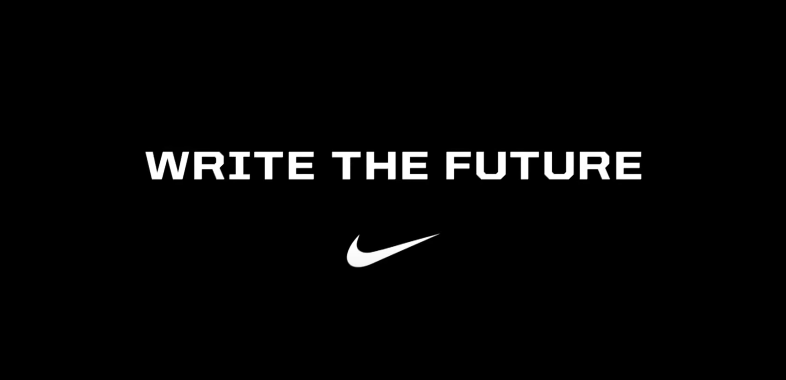
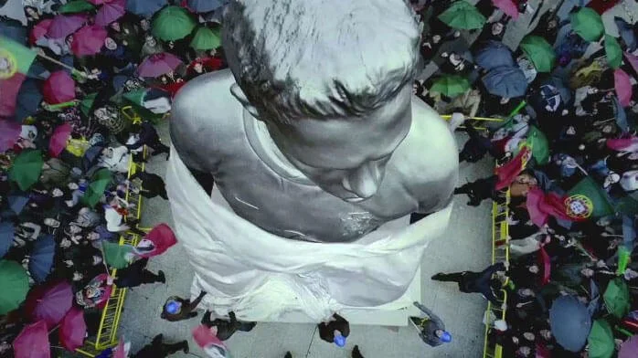

案例发生了什么


一记解围、一次失误或一脚进球，在数秒内把球员带入完全不同的人生：德罗巴避免内战、鲁尼从全民偶像跌入低谷后重新崛起、C 罗被立雕像并走进电影。影片把世界杯的真正压力拍成“每次触球都可能改写未来”，而不是简单堆砌球星。
以三分钟全球影片建立母题；再用球员支线、户外和数字互动扩展不同未来；赛事期间依据真实赛况快速改写数字户外和社交内容，让广告世界与比赛结果持续互相照应。
MARKETING KNOWLEDGE ROUTER · 营销知识路由器
营销启发卡
把历届经典的记忆点、商业结构和迁移方法放在同一层阅读。 卡片底部按主题连接全站相关案例、经典方法与深度文章。
核心动作
赛场一瞬决定名誉、国家情绪与个人命运的紧张感，以及球迷不断想象“如果刚才那球进了”的代入感；一次触球，整个人生被瞬间快进到荣誉、失败或重生。
传播与商业机制
Nike 用“未来由行动写下”解释运动员为何冒险，也把品牌一贯的行动主义从产品口号推进到大众文化事件；以三分钟全球影片建立母题；再用球员支线、户外和数字互动扩展不同未来；赛事期间依据真实赛况快速改写数字户外和社交内容，让广告世界与比赛结果持续互相照应。
可复用的方法
赛果营销不必等冠军产生后才响应。先写好“成功 / 失败 / 争议”多分支剧本，再把真实比赛节点接入同一创意世界，才能同时获得速度和一致性。
适用条件、风险与证据
- 多球星授权、跨市场语境和实时编辑成本很高；历史页面没有统一披露销售增量，因此不能把赛事总体热度直接归因给品牌。
- 后续复盘还应补齐发布主体、时间线、真实执行图、媒介范围和结果口径；没有这些证据时，不把行业评价或赛事总热度写成品牌增量。
资料与来源
官方资料与原始来源
市场 / 权益
全球
非官方/球队与球星资源
创意打法
赛果分支叙事型；球星群像型；实时内容型；全球整合传播型
- Marcus D. Price · 2010Nike Write the Future · 创意总监项目页
- The Case Centre · 2010Write the Future campaign case
来源按品牌/官方发布、官方账号留存、权威媒体、获奖案例库分层记录；品牌与奖项自报结果不视作独立审计。